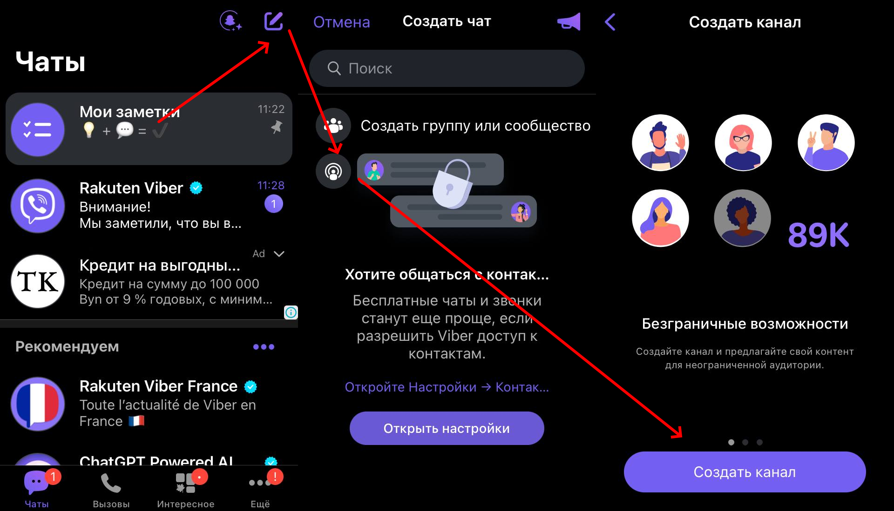
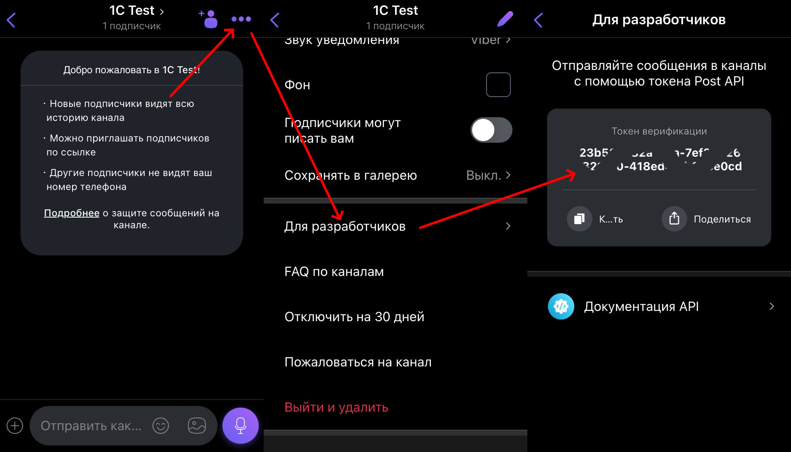
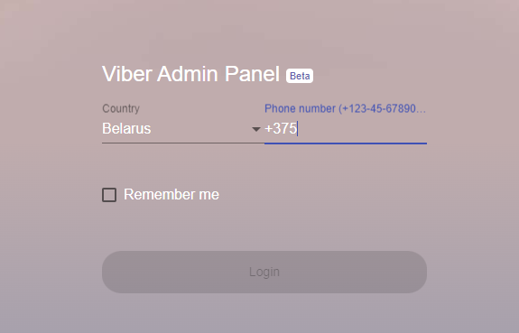
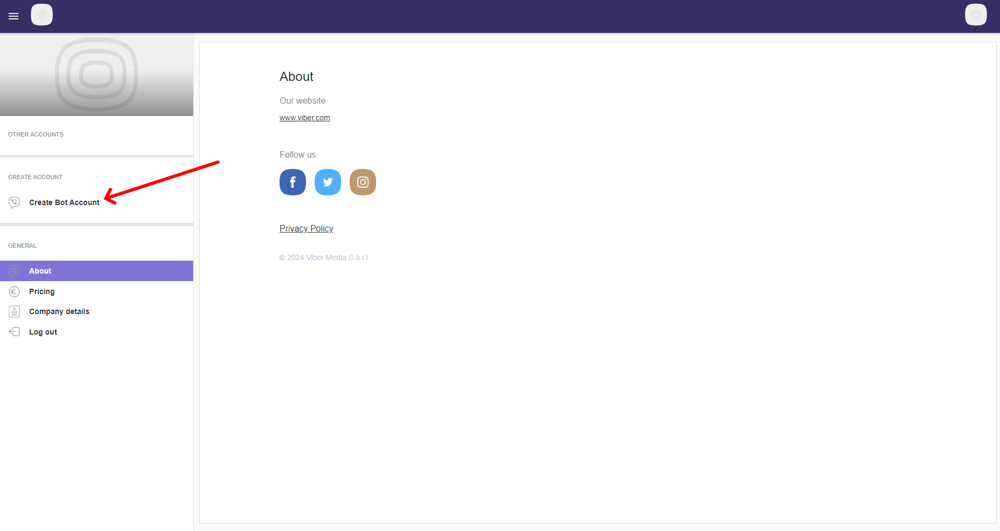
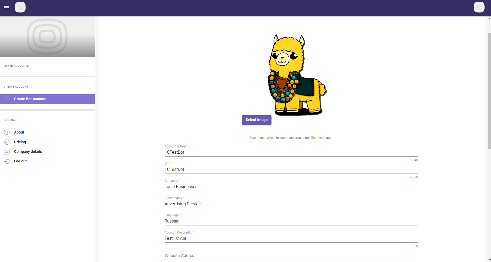
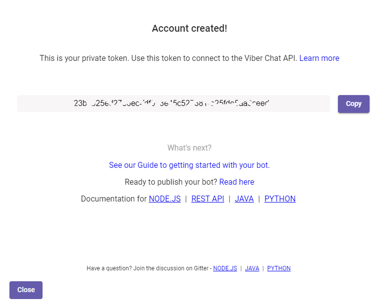
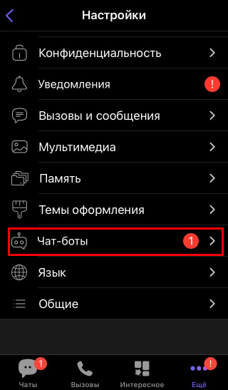

![]()
Viber
Этот раздел посвящен библиотеке для работы с Viber API в 1С:Предприятие, OneScript и CLI. На данной странице описаны все действия, необходимые для полноценного начала работы
Начиная с 05.02.2024 данный способ создания ботов более недействителен: Rakuten отменил возможность создавать ботов бесплатно и теперь для работы с API необходимо проходить верификацию по коммерческой модели. Подробнее тут
Методы данной библиотеки не проходят тес тирование с 10.01.2025
Начало работы
У Viber есть два REST API: один для работы с каналами, а второй - для чат-ботов. В обоих случаях основными параметрами служат Токен и IDПользователя
-
Если вам необходимо управлять каналом:
- Зайдите в приложение Viber и создайте новый канал

- После создания, перейдите в настройки канала -> Для разработчиков, и скопируйте Токен

- Установите Webhook. См. Установить Webhook
- IDПользователя - ваш ID (администратора канала). См. Получить информацию о канале
-
Если вам необходим чат-бот:
- Перейдите по ссылке https://partners.viber.com/account/create-bot-account и авторизуйтесь с вашим номером телефона, который привязан к Viber

- Выберите пункт создания нового бота

- В меню создания бота заполните все необходимые поля

- Скопируйте Токен

- Найти своего нового бота вы можете отсканировав QR на странице создания или в настройках (пункт чат-боты) в приложении Viber.

- Сейчас вы не можете начать диалог с ботом, сначала необходимо установить Webhook. См. Установить Webhook
- После запуска IDПользователя будет ID конкретного человека, ведущего диалог с ботом. Получить можно из обработыки входящих сообщения по Webhook
Важно: ID одного и того же пользователя у чата и канала - это разные значения. Нельзя использовать ID, полученный из сообщения боту для вызова методов управления каналом и наоборот